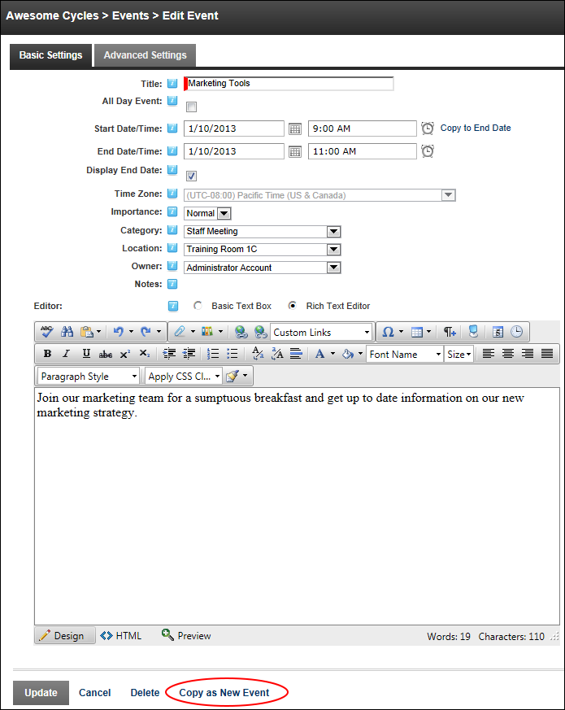

Copying an Existing Event as a New Event
How to copy an existing event and save it as a new event using the Events module.
- Go to the event details page of the required event. See "Viewing Event Details (List View)", See "Viewing Event Details (Month View)" or See "Viewing Event Details (Week View)".
- Click the Edit link.
- Edit the event details for the new event, remembering to check any advanced setting
- Optional. At Owner, select a new owner for this event.
- Click the Copy As New Event link. This displays the message "Have you set all the correct details for the new Event?"
-
Click the OK button to confirm. If the event requires moderation you will be notified when moderation has occurred and whether the event was accepted. Once moderated events are accepted they are displayed in the module.
